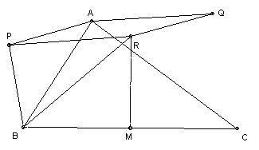

ABC is a triangle with AB not equal to AC. P is taken on the opposite side of AB to C such that PA = PB. Q is taken on the opposite side of AC to B such that QA = QC and ∠Q = ∠P. R is taken on the same side of BC as A such that RB = RC and ∠R = ∠P. Show that APRQ is a parallelogram.
Solution
Solution by Vivek Kumar Mehra

Put ∠RBC = x. Then RB = a/(2 cos x). Since angle P = angle R, we have ∠PBA = angle RBC = x, and so ∠PBR = ∠B. Also PB = c/(2 cos x). Similarly, AQ = b/(2 cos x).
Applying the cosine rule to triangle PBR, we get PR2 = PB2 + BR2 - 2 PB·BR cos B. Hence (2 cos x)2PR2 = c2 + a2 - 2ac cos B = (2 cos x)2b2. Hence PR = b/(2 cos x) = AQ. Similarly, QR = AP. Hence result.

© John Scholes
jscholes@kalva.demon.co.uk
8 Mar 2003
Last updated/corrected 8 Mar 03